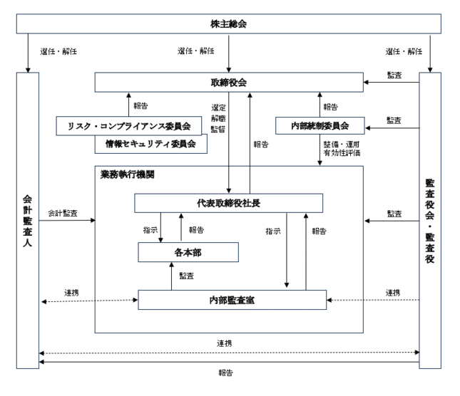

該当事項はありません。
該当事項はありません。
③ 【その他の新株予約権等の状況】
該当事項はありません。
該当事項はありません。
(注) １．2020年７月31日開催の取締役会決議により、2020年９月３日付で普通株式１株につき普通株式30,000株の株式分割を行っております。これにより、発行済株式総数が2,999,900株増加し、3,000,000株となっております。
２．2020年11月20日開催の取締役会決議により、2020年12月16日付で普通株式１株につき普通株式1.5株の株式分割を行っております。これにより、発行済株式総数が1,500,000株増加し、4,500,000株となっております。
３．2021年２月25日を払込期日とする公募増資（ブックビルディング方式による募集）による普通株式804,000株（発行価格4,130円、引受価格3,799.60円、資本組入額1,899.80円)発行により、資本金及び資本準備金がそれぞれ1,527,439千円増加しております。
４．2021年３月29日を払込期日とする第三者割当増資（オーバーアロットメントによる売出しに関連した第三者割当増資）による普通株式198,900株（割当価格3,799.60円、資本組入額1,899.80円）発行により、資本金及び資本準備金がそれぞれ377,870千円増加しております
2024年１月31日現在
(注) 自己株式80株は、「単元未満株式の状況」に含まれております。
2024年１月31日現在
(注) 株式会社South airは、当社代表取締役社長中島杏奈及び代表取締役副社長中島瑞木が両者合わせてその株式の100％を保有しております。
2024年１月31日現在
(注)「単元未満株式」には、自己株式が80株含まれております。
該当事項はありません。
【株式の種類等】
普通株式
該当事項はありません。
該当事項はありません。
該当事項はありません。
(注) 当期間における保有自己株式には、2024年４月１日からこの有価証券報告書提出日までの単元未満株式の買取りによる株式は含まれておりません。
当社は、株主に対する利益還元を経営上の重要課題の１つとして位置付けておりますが、財務体質の強化と事業拡大のための内部留保の充実等を図り、運転資金もしくは設備投資に充当することで更なる事業拡大をすることが株主に対する最大の利益還元につながると考えております。
そのため、今後においても当面の間は内部留保の充実を図る方針であります。
将来的には、収益力の強化や事業基盤の整備を実施しつつ、内部留保の充実状況及び企業を取り巻く事業環境を勘案した上で、株主に対して安定的かつ継続的な利益還元を実施する方針でありますが、現時点において配当実施の可能性及びその実施時期については未定であります。
なお、剰余金の配当を行う場合、年１回の剰余金の配当を期末に行うことを基本としており、その他年１回中間配当を行うことができる旨を定款で定めております。
配当の決定機関は、期末配当は株主総会、中間配当は取締役会であります。
当社は、事業環境が刻々と変化するゲーム業界において経営の効率化を図ると同時に、経営の健全性、透明性及びコンプライアンスを高めていくことが長期的に企業価値を向上させていくと考えており、それによって、株主をはじめとした多くのステークホルダーへの利益還元ができると考えております。
こうした認識のもと、コーポレート・ガバナンスの充実を図りながら、経営環境の変化に迅速かつ柔軟に対応できる組織体制を構築することが重要な課題であると位置づけ、企業価値の最大化を図ることを目標としてまいります。
当社は、会社法に基づく機関として株主総会、取締役会及び監査役会を設置しております。また、日常的に業務を監視する内部監査室、企業統治の体制を担保するリスク・コンプライアンス委員会、財務報告の信頼性を確保する内部統制委員会を設置するとともに、執行役員制度を導入して経営の効率化・迅速化を図っております。これらの各機関が相互に連携し、経営の健全性、効率性及び透明性を確保した迅速な意思決定の実現を可能とするため、現状の企業統治体制を採用しております。
なお、当社のコーポレート・ガバナンス体制図は、次のとおりであります。

当社の取締役会は取締役４名で構成されており、うち１名が社外取締役となっております。取締役会は、原則月１回の定例取締役会を開催する他、必要に応じて臨時取締役会を開催し、迅速な経営上の意思決定を行える体制としております。取締役会では、法令、定款で定められた事項及び取締役会規程に基づき、経営に関する重要事項を決定するとともに各取締役の業務進捗報告等を行っております。
また、取締役会の議案については事前に全取締役・監査役に連絡し、議事の充実に努めております。
なお、取締役会には、全ての監査役が出席し、取締役の業務執行の状況を監視できる体制となっております。
当社の監査役会は、常勤監査役１名、非常勤監査役２名の合計３名の社外監査役で構成されております。監査役会は原則月１回の定例監査役会を開催する他、必要に応じて臨時監査役会を開催し、監査計画の策定、監査実施状況等の情報共有を図っております。
また、取締役会等の重要な会議への出席、実地監査を行う他、効率的な監査を実施するため、適宜、内部監査担当者及び監査法人等と積極的な連携、意見交換を行っております。
リスク・コンプライアンス委員会は、「リスク・コンプライアンス規程」に基づき構成しており、当社の代表取締役社長が委員長を務め、委員長及び委員長指名の委員が出席のもと、原則として四半期に１回開催しております。基本方針、計画及び体制の策定、関係規則、マニュアル等の策定等について協議し、コンプライアンス体制の充実に向けた意見の交換を行っております。
また、リスク・コンプライアンス委員会において、リスクマネジメント活動全般を適宜確認し、対応方針及び対応策の検討・策定を行い、リスク対応主管部門と連携し、対応を実施しております。なお、情報セキュリティ委員会は当該委員会の下に統括されております。
当社の取締役会、監査役会及びリスク・コンプライアンス委員会は以下のメンバーで構成されております。
（◎：議長又は委員長、○：構成・出席メンバーを表します。）
当社は経営の監督機能を担う取締役会と業務執行機能を分離し、迅速かつ効率的な業務執行を可能とする体制を構築するため、2022年４月に執行役員制度を導入しております。執行役員は、取締役会の決議によって選任され、取締役会で決定した方針のもと担当業務の意思決定及び業務執行を行っております。
内部統制委員会は、金融商品取引法に基づいて内部統制を統括することを目的として設けられており、内部統制全般に関する協議及び手続を行い、必要に応じてそれらの対応策について審議、検討を行っております。
また、当社の内部統制委員会は、代表取締役社長を委員長とし、常勤取締役、内部監査室メンバー、オブザーバーとして常勤監査役、で構成されております。
当社は、代表取締役社長直轄の部署として内部監査室を設置し、内部監査担当者１名が監査計画に基づき監査を実施しております。内部監査は各部門に対して原則として年１回以上の監査計画を組み、内部監査結果について代表取締役社長への適宜報告及び監査役会との連携を行っております。
当社はEY新日本有限責任監査法人と監査契約を締結しており、決算内容について監査を受けております。なお、同監査法人と当社との間には、特別の利害関係はありません。
当社は、経営の透明性の向上とコンプライアンス遵守の経営を徹底するため、コーポレート・ガバナンス体制の強化を図りながら、経営環境の変化に迅速に対応できる組織体制を構築することを重要な経営課題と位置づけております。下記の内部統制システム整備に関する基本方針について、取締役会において決議しております。
(a) 「取締役会規程」をはじめ社内諸規程の制定、適正な運用とともに、必要に応じて発展的に改正等を行う。
(b) 「リスク・コンプライアンス規程」を制定し、マニュアル等の策定、教育・研修を開催し、コンプライアンスの周知徹底と意識の維持・向上を図る。
(c) 「内部監査規程」に基づき内部監査を実施する。内部監査担当及び代表取締役社長は必要に応じて、監査法人及び監査役会と連携し、情報交換等を行い、効率的な内部監査を実施する。
(d) 取締役及び使用人が法令もしくは定款に抵触する行為が認められたとき、それを告発しても、当該人に不利益な扱いを受けない旨の「内部通報規程」を制定する。
当社は、職務執行に関わる文書(電磁的記録を含む)の保存及び管理の取扱いについては、「文書管理規程」に基づき必要に応じて適時見直し整備、作成、保管及び廃棄等の取扱いを明確にするとともに、次のように定めております。
(a) 取締役会議事録、株主総会議事録、社内規程、各種契約書などの重要な文書及び情報は、電磁的記録媒体等へ記録し、「文書管理規程」の定めに従い、法令の保存期間に準じて定められた期間、適正に保存及び管理する。
(b) 文書管理主管部門は管理本部とし、取締役及び監査役の閲覧請求に対して常に閲覧に供するものとする。
(a) 取締役がリスク管理体制を構築する責任と権限を有し、これに従いリスク管理に係る「リスク・コンプライアンス規程」を制定し、内容・性質に応じて最も相応しい主管部門及び関連部門を定め、管理体制を構築する。
(b) リスク・コンプライアンス委員会において、事業活動における各種リスクに対する予防・軽減体制の強化を図る。
(c) 危機発生時には、緊急事態対応体制をとり、社内外への適切な情報伝達を含め、当該危機に対して適切かつ迅速な対応を行い、損害の拡大防止を最小限にとどめる。
取締役の効率的な職務執行体制を確保するために、次のように定めております。
(a) 取締役の職務の執行が効率的に行われることを確保するため、原則として毎月１回の定例取締役会を開催する他、必要に応じて臨時取締役会を開催し、迅速な意思決定を確保する。
(b) 取締役は「取締役会規程」の定めに従い、取締役会において、職務執行状況を報告する。
(c) 取締役の効率的な職務執行のため、「職務分掌規程」及び「職務権限規程」を定め、組織の職務及び権限、責任を明確にする。
当社は、監査役がその職務を補助すべき使用人を置くことを求めた場合、取締役会は、監査役と協議の上、必要に応じて使用人を監査役付きとして指名し、職務に専念させることとしております。
(a) 監査役の職務を補助すべき使用人は、必要に応じてその人員を配置する。
(b) 監査役が指定する補助期間中、当該使用人の指揮権は監査役に委譲されたものとし、取締役及び他の者の指揮命令は受けず遂行し、取締役からの独立性を確保する。
(c) 当該使用人の人事異動及び人事考課については、監査役の同意を得るものとする。
取締役または使用人は、法定の事項に加え、当社に重大な影響を及ぼすおそれのある事項、内部監査の実施状況、重大な社内通報制度等に基づき、速やかに監査役に報告する体制を整備しております。
(a) 監査役は取締役会の他、重要な会議に出席し、取締役及び使用人から職務執行状況の報告を求めることができる。また、会議に付議されない重要な報告書類等について閲覧し、必要に応じ内容の説明を求めることができる。
(b) 取締役及び使用人は、法令に違反する事実、会社に損害を与えるおそれのある事実を発見した場合は、「内部通報規程」に基づき速やかに監査役に報告する。
(c) 取締役及び使用人は、監査役から業務執行に関する事項の理由を求められた場合には、速やかに報告する。
(a) 代表取締役社長、監査法人、内部監査室等は、監査役会又は監査役の求めに応じて、それぞれ定期的及び随時に監査役と意見交換を実施することにより連携を図るものとする。
(b) 監査役は業務に必要と判断した場合は、会社の費用負担にて、弁護士、公認会計士、その他専門家を自らの判断で起用することができるものとする。
(c) 監査役が職務の執行について生ずる費用の前払い等の請求をした時は、監査役の職務の執行に必要でないと認められた場合を除き、速やかに当該費用または債務を処理する。
財務報告の信頼性を確保するため、代表取締役社長の指示のもと、財務報告に係る内部統制システムの整備及び運用を行い、その仕組みが適正に機能することを継続的に評価し、その適合性を確保しております。
(a) 反社会的勢力との取引排除に向けた基本的考え方
イ．当社の行動規範、社内規程等に明文の根拠を設け、代表取締役社長以下全員が反社会的勢力の排除に取り組む。
ロ．反社会的勢力とは、取引関係を含めて一切関係を持たない。また、反社会的勢力による不当要求は、一切を拒絶する。
(b) 反社会的勢力との取引排除に向けた整備状況
イ．当社は「反社会的勢力対応規程」において明文化し、反社会的勢力排除のための体制構築に取り組み、当社全役職員の行動指針とする。
ロ．取引先等について、反社会的勢力との関係に関して１年に１回以上の確認を行い、「取引先チェックシート」として、管理本部にて厳重に保管管理する。
ハ．反社会的勢力の該当の有無の確認のため、外部関係機関から得た反社会的勢力情報の収集に取り組む。
ニ．反社会的勢力からの不当要求に備え、平素から警察、全国暴力追放運動推進センター、弁護士等の外部専門機関と、より密接な連携関係の構築を行う。
当社は、市場、情報セキュリティ、環境、労務、製品の品質安全等あらゆる事業運営上のリスクに加え、災害・事故に適切に対処できるよう「リスク・コンプライアンス規程」を制定施行し、リスク・コンプライアンス委員会において、リスク対応計画やその実施状況などを含めてリスクマネジメント活動全般を管理しております。
各部門の担当者は、日常の業務を通じて管理を行うとともに、不測の事態が発生した場合には、速やかに委員会に報告することとなっております。また、内部監査室は内部監査業務を通じ、リスクマネジメント活動の実施状況について監査を行い、その結果を代表取締役社長に報告しております。
必要に応じて、弁護士、公認会計士、税理士、社会保険労務士等の外部専門家の助言を受けられる体制を整えており、リスクの未然防止と早期発見に努めております。
当社と取締役（業務執行取締役等であるものを除く。）及び監査役がその期待される役割を十分に発揮できるよう、現行定款において、会社法第427条第１項の規定に基づき、同法第423条第１項の損害賠償責任の限度額を法令で定める額とする責任限定契約を締結することができる旨を定めており、現在当社の社外取締役及び各社外監査役との間で当該責任限定契約を締結しております。当該契約に基づく損害賠償責任の限度額は、法令が定める最低責任限度額としております。
⑥ 役員等賠償責任保険契約の内容の概要
当社は、会社法第430条の３第１項に規定する役員等賠償責任保険契約を保険会社との間で締結し、被保険者が負担することになる職務の執行に関する責任、又は当該責任の追及に係る請求を受けることによって生ずることのある損害を当該保険契約により補填することとしております。当該役員等賠償責任保険契約の被保険者は当社の取締役及び監査役であり、その保険料を全額当社が負担しております。ただし、法令違反の行為であることを認識して行った行為に起因して生じた損害は補填されないなど、一定の免責事由があります。
当社の取締役は10名以内とする旨定款に定めております。
当社は、取締役の選任決議について、議決権を行使することができる株主の議決権の３分の１以上を有する株主が出席し、その議決権の過半数をもって行う旨、また、累積投票によらない旨を定款に定めております。
当社は、会社法第454条第５項の規定により取締役会の決議によって毎年７月31日を基準日として、中間配当をすることができる旨を定款に定めております。これは、株主への機動的な利益還元を可能とするためであります。
当社は、経営環境の変化に対応した機動的な資本政策の遂行を確保するため、会社法第165条第２項の規定によって、取締役会の決議によって自己の株式を取得することができる旨を定款に定めております。
⑪ 取締役会の活動状況
当事業年度において当社は原則月１回の取締役会のほか、必要に応じて臨時取締役会を開催しております。当事業年度においては、当社は14回開催しており、個々の取締役の出席状況については次のとおりであります。
（注）上記とは別に取締役会決議があったものとみなす書面決議が７回ありました。
取締役会における具体的な検討内容としては、当社取締役会規程の決議事項、報告事項の規則に基づき、株主総会に関する事項、予算・人事組織に関する事項のほか、当社の経営方針、決算に関する事項、重要な業務執行に関する事項、法定及び定款に定められた事項、その他の重要事項等を決議し、また、業務執行の状況、監査の状況等につき報告を受けております。
男性
(注) １．秋山裕俊は社外取締役であります。また早川治彦、須黒統貴及び東條桜子は、社外監査役であります。
２．東條桜子の戸籍上の氏名は梶尾桜子であります。
３．当社は、各監査役との間で、責任限定契約を締結しております。当該契約に基づく損害賠償責任は、法令に定める最低責任限度額としております。
４．取締役の任期は、2024年４月25日開催の定時株主総会終結の時から、２年以内に終了する事業年度のうち、最終のものに関する定時株主総会終結の時までであります。
５．監査役の任期は、2024年４月25日開催の定時株主総会終結の時から、４年以内に終了する事業年度のうち、最終のものに関する定時株主総会終結の時までであります。
６．代表取締役副社長中島瑞木は代表取締役社長中島杏奈の姉であります。
７．当社は、東京証券取引所に対し、秋山裕俊、早川治彦、須黒統貴、東條桜子の４名を独立役員として届け出ております。
８．当社は、法令に定める監査役の員数を欠くことになる場合に備え、会社法第329条第３項に定める補欠監査役１名を選任しております。補欠監査役の略歴は次のとおりであります。
当社の社外取締役は１名、社外監査役は３名であります。
社外取締役(非常勤取締役)の秋山裕俊は、コンサルティングファームにおける豊富な経験及び幅広い知見を有しており、当社の社外取締役として適任であり、社外取締役としての職務を適切に遂行することができるものと判断しております。
社外監査役(常勤監査役)の早川治彦は、経営者としての豊富な経験を有していることに加え、経営に対する客観的な立場に鑑み、当社の社外監査役として適任であり、常勤監査役としての職務を適切に遂行することができるものと判断しております。
社外監査役(非常勤監査役)の須黒統貴は、公認会計士及び税理士資格を有しており、財務及び会計に関する相当程度の知見を有していることから、監査役としての職務を適切に遂行することができるものと判断しております。
社外監査役(非常勤監査役)の東條桜子は、弁護士として培われた専門的な知識・経験を有しており、監査役としての職務を適切に遂行することができるものと判断しております。
なお、当社と上記の社外取締役及び社外監査役との間に特別な利害関係はありません。
当社は、社外取締役及び社外監査役を選任するにあたり、独立性に関する基準は設けておりませんが、選任にあたっては、会社法に定める社外性の要件を満たすことに加え、東京証券取引所の定める独立役員に関する基準等を参考にしております。
社外取締役については、定期的に常勤監査役から内部監査の状況や監査役監査の状況及び会計監査の状況等について情報共有しております。
また、社外監査役については、原則として毎月１回開催される監査役会において常勤監査役から監査役監査の状況、内部監査の状況及び会計監査の状況の情報共有を行っております。また、定期的に会計監査人から直接監査計画や監査手続の概要等について説明を受けるとともに、監査結果の報告を受けております。
(3) 【監査の状況】
当社は監査役会設置会社としており、監査役は３名の社外監査役（常勤監査役１名、非常勤監査役２名）を選任しております。監査役会は毎事業年度立案する監査計画に基づき、監査役は取締役会を含む社内の重要会議への出席のほか、取締役、執行役員及び従業員からの事業の運営状況の聴取等を通じて、取締役の経営判断や職務遂行の状況を監査しております。
また、毎月１回程度開催する定例監査役会において、監査状況について監査役相互の情報共有を行うとともに、内部監査担当者や会計監査人とのミーティングを行うことで監査の実効性の向上を図っております。なお、監査役の東條桜子は弁護士として、法令やコンプライアンスの面で専門的な知見を有しております。
常勤監査役の活動として、取締役及び各部門の担当者との面談や重要書類の閲覧を通して社内の情報収集に努め、内部統制システムの構築・運用の状況を監視・検証するとともに、各監査役間における情報の共有及び意思の疎通を図っております。
監査役会における主な検討事項として、監査の方針や監査計画の策定、内部統制システムの構築・運用状況、取締役の職務執行及び経営判断の妥当性、会計監査人監査の相当性及び報酬の適切性、監査報告の作成等であります。当事業年度において当社は監査役会を15回開催しており、個々の監査役の出席状況については、次の通りであります。
監査役会における具体的な検討事項として、監査方針及び監査実施計画の作成、内部統制システムの整備・運用状況の確認、会計監査人の選任及び会計監査人の報酬に対する同意等を実施しております。
常勤監査役の活動としては、社内の重要会議への出席、重要な決裁書類の閲覧、当社における業務及び財産状況の調査等を行い、監査役会において社外監査役へ報告しております。
内部監査については、独立した組織として代表取締役社長直轄の内部監査室を設置し、各部門の業務に対し、「内部監査規程」及び「内部監査計画」に基づいて業務監査を実施し、コンプライアンス遵守状況等を確認しております。内部監査の結果については、代表取締役社長及び取締役会に報告、監査役会と連携し、監査結果を踏まえて被監査部門に改善指示を行い、フォローアップ監査を実施することにより、内部監査の実効性を確保しております。
EY新日本有限責任監査法人
2019年１月期以降６年間
ｃ．業務を執行した公認会計士の氏名及び継続監査年数
指定有限責任社員 業務執行社員 三木 康弘
指定有限責任社員 業務執行社員 井澤 依子
※継続監査年数については、いずれも７年以内のため記載を省略しております。
ｄ．会計監査業務に係る補助者の構成
公認会計士 ３名、その他 14名
ｅ．監査法人の選定方針と理由
監査役会は、上場会社の監査実績、監査法人の規模、品質管理体制及び独立性等を総合的に勘案し、監査の実効性を確保できるか否かを検討した上で、監査法人を選定する方針としております。
また監査役会は、監査法人の職務の執行に支障がある場合等、その必要があると判断した場合は、株主総会に提出する監査法人の解任又は不再任に関する議案の内容を決定いたします。
また、監査法人が会社法第340条第１項各号に定める項目に該当すると認められる場合は、監査役全員の同意に基づき、監査法人を解任いたします。この場合、監査役会が選定した監査役は、解任後最初に招集される株主総会において、監査法人を解任した旨及びその理由を報告いたします。
ｆ．監査役及び監査役会による監査法人の評価
監査役及び監査役会は、会計監査人の業務執行・品質管理体制、業務執行内容の妥当性、監査結果の相当性及び監査報酬の水準等を勘案するとともに、会計監査人との面談、意見交換等を通じて総合的に判断しており、EY新日本有限責任監査法人による会計監査は適正に行われていると評価しております。
該当事項はありません。
該当事項はありません。
当社は、監査報酬について、監査公認会計士等の監査計画の内容、職務遂行状況、報酬の見積りの算定根拠等の妥当性を総合的に勘案し、監査役会の同意を得た上で決定しております。
当社監査役会は、前期の監査実績の相当性、当期の監査計画の内容及び報酬額の妥当性等を検討した結果、監査報酬水準は適切であると判断し、会計監査人の報酬等に同意いたしました。
(4) 【役員の報酬等】
決定方針の決定方法
当社は以下の取締役の個人別の報酬等の内容についての決定方針に関して、取締役会において決議をして決定しております。
当社の取締役の報酬は、企業価値向上に対する貢献意欲を高めることを目的とし、適正な水準の固定報酬としての基本報酬を支払うことを基本方針とする。
当社の取締役の基本報酬は、月例の固定報酬とし、役位、職責、在任年数に応じて他社水準、当社の業績、従業員給与の水準をも考慮しながら、総合的に勘案して決定するものとする。
個人別の報酬額については取締役会決議に基づき代表取締役社長がその具体的内容について委任を受けるものとする。委任した理由は、当社業績を勘案しつつ、各取締役の担当について評価を行うには代表取締役が適していると判断したためである。なお、取締役会は、当該権限が代表取締役社長によって適切に行使されるよう、社外取締役の意見を得るものとする。
具体的には、取締役の報酬等の上限額を株主総会で定めており、役員報酬等を含めた年間の役員報酬は、その上限額の範囲内で支給することとしております。なお、役員報酬限度額は、以下のとおりです。
取締役の報酬等の総額は、2019年４月26日開催の第５期定時株主総会決議により年額160百万円以内となっております。決議時点の取締役の員数は、５名であります。
監査役の報酬限度額は、2018年４月26日開催の第４期定時株主総会決議により年額10百万円以内となっております。決議時点の監査役の員数は、２名であります。
役員の報酬等の額の決定過程における取締役会の関与状況としては、取締役の報酬総額を取締役会にて決定しております。当社取締役の個人別の報酬額については、取締役会決議に基づき代表取締役社長（当時）中島瑞木がその具体的な内容について委任を受け決定しております。委任した理由は、当社業績を勘案しつつ、各取締役の担当について評価を行うには代表取締役が適していると判断したためであります。なお、取締役会は当該権限が代表取締役によって適切に行使されるよう、社外取締役の意見を得ることとしております。また、監査役の報酬については、監査役の協議によって決定しております。
報酬等の総額が１億円以上である者が存在しないため、記載しておりません。
(5) 【株式の保有状況】
① 投資株式の区分の基準や考え方
当社は、主として当該株式の売却益及び配当収入を見込んで株式を保有することを純投資目的としており、保有目的が純投資目的である投資株式と純投資目的以外の目的である投資株式の区分については、当該目的に照らして判断しております。
②保有目的が純投資目的以外の目的である投資株式
当社は、当事業年度末時点において純投資目的以外の目的である投資株式を保有しておりません。
③保有目的が純投資目的である投資株式